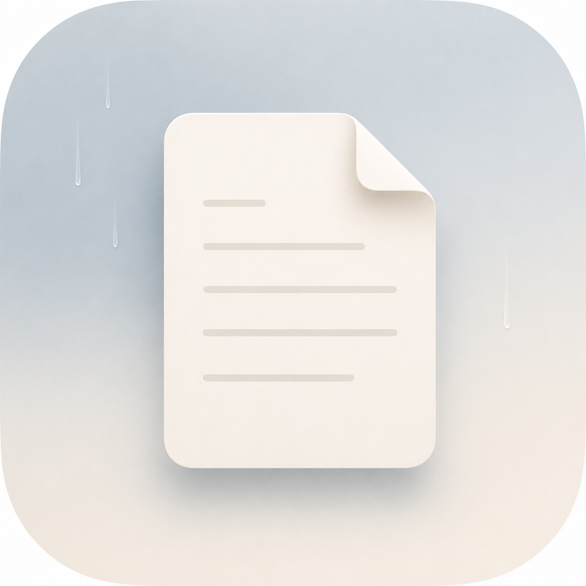

Vertical or titlebar tabs
Switch between a left tab rail and titlebar tabs without changing the document model.

SereinSwift + AppKit + PDFKit
A compact native macOS PDF reader for focused research, keyboard reading, split comparison, clean highlights, and fast outline navigation.
Reader Surface
Left tabs keep track of open documents, the center stays reserved for reading, and the right sidebar handles structure, pages, search, and annotations. The layout stays quiet even when the workflow gets dense.
Switch between a left tab rail and titlebar tabs without changing the document model.
Search this document or every open PDF while previews stay out of the reading pane.
Long outline titles wrap in a tight right pane instead of stretching the window.
Highlight, comment, save, and export Markdown grouped by page for note-taking.
Research Flow
Serein keeps common reading moves close to the keyboard: Vim-style navigation, all-open search, multi-PDF continuous reading, a Spotlight-style recent launcher, and compare split for reading two views side by side.
Open files or folders; Serein scans PDFs and creates lightweight tabs first.
Compare the current PDF with another tab, or with a second state of itself.
Hot-reload clean PDFs after LaTeX or Typst rewrites them on disk.
Local Release
Serein currently targets macOS 14+ and is distributed from the project release page. The app is locally signed for this project, so first launch may require the standard macOS right-click Open flow.
Compact Docs
just for the local task runnerRuntime settings live in:
Personal, non-commercial use. Redistribution, commercial use, sublicensing, and third-party distribution remain restricted without written permission.